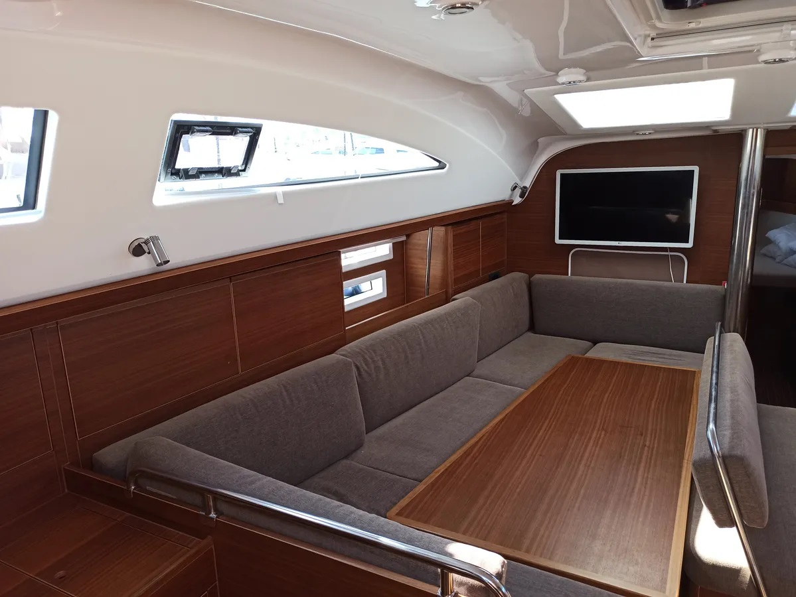
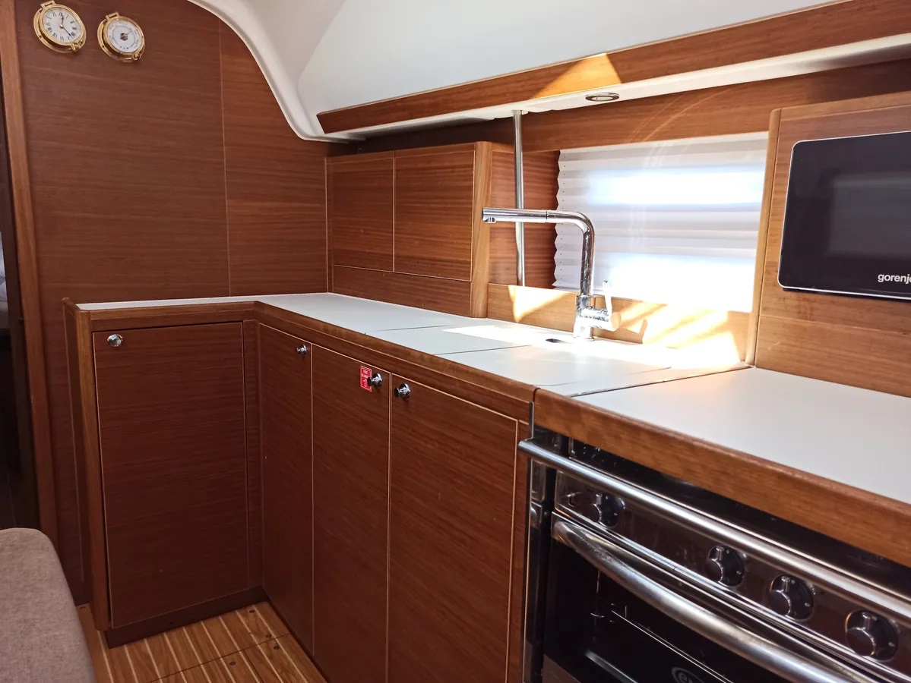
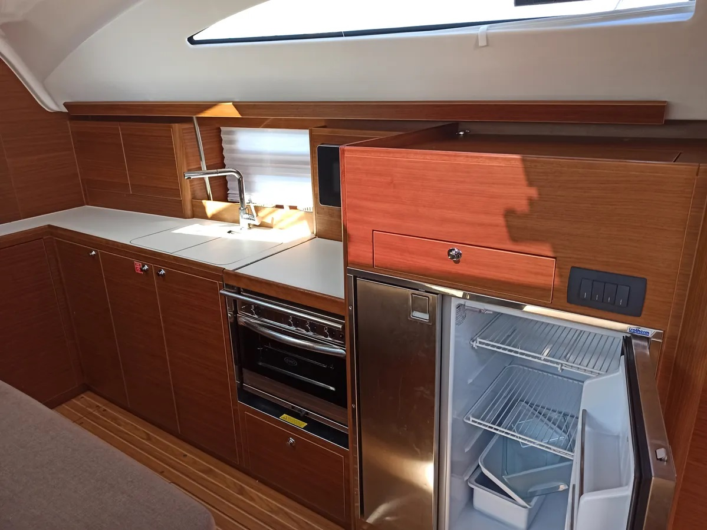
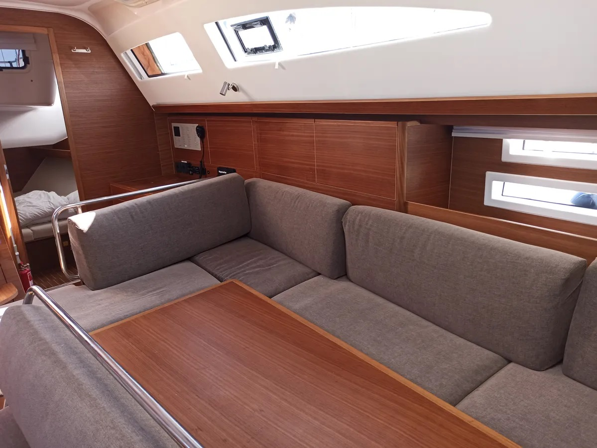

Материал перенесён из прежней версии сайта и сохранён как авторский аналитический обзор. Технические характеристики, комплектация и оценочные суждения требуют проверки применительно к конкретному году выпуска и судну; это не протокол испытаний EVA или DIANA.
Честный тест-драйв Elan 45.1 Impression: Инженерный разбор крейсера
Детальный разбор сильных и слабых сторон словенского парусника без прикрас. Взгляд через призму управляемости, качества сборки и реальных морских рисков.
⚓️ В двух словах: кто есть кто
Эта статья написана как навигатор для тех, кто, как и мы, предпочитает за штурвалом не просто красивые картинки, а инженерную ясность и прозрачную оценку рисков. Сегодня под нашим прицелом — словенский крейсер Elan 45.1 Impression. Это детальный разбор его сильных и слабых сторон без прикрас.
Elan Impression 45.1 — это 45-футовый монокорпусный парусник, который представляет собой итог многолетней эволюции и самую серьезную переработку легендарной модели Impression 434 с момента её первого появления в 2004 году. Лодка создавалась с прицелом на взыскательных частных владельцев и суровые условия чартера, поэтому её конструкция отточена до мелочей. Это компромисс, но компромисс великолепный: она сочетает в себе традиционное управление парусами и настоящую плавность хода, оставаясь вместительной и комфортной для длительных автономных переходов.
📊 Технические характеристики
| Длина (LOA) | 13.85 м (45'6") |
| Ширина | 4.18 м |
| Осадка | 1.9 м |
| Водоизмещение | 10 420 кг |
| Двигатель | 50-75 л.с. (Yanmar) |
| Категория CE | A — Ocean |
| Каюты | 3 / 4 |
📸 Фотохроника и интерьер





👍 Сильные стороны: за что мы ценим этот проект
Ходовые качества и управляемость: Спроектированная легендарным бюро Humphreys Yacht Design, лодка унаследовала гоночную ДНК. На ходу при попутном ветре 12-15 узлов она легко держит скорость 6.5-7.5 узлов. Инженеры оставили схему с большой генуей (135%) и двумя перьями руля, что дает точный и предсказуемый отклик на штурвал. В парусном плане сделана ставка на традиции — здесь полный привод от переднего паруса, который вы сами перебрасываете, что спасает в длительных штилевых переходах.
Комфорт и интерьер: Главная фишка — Deck Saloon. Приподнятая рубка и панорамное остекление дают отличную освещенность. Камбуз сдвинут в нос, освобождая центральную часть салона. В трехкаютной версии владельца ждет островной двуспальный блок в носу с огромным пространством для хранения, а большие иллюминаторы в кормовых каютах превращают их в светлые комнаты.
Качество сборки: Словенская школа славится отношением к дереву. Зазоры минимальны, фурнитура посажена плотно. Корпус производится по технологии вакуумной инфузии. Над ватерлинией используется сэндвич из пеноматериала для теплоизоляции, а под ней — монолитный стеклопластик. Слой винилэфирной смолы защищает от осмоса.
Безопасность и конкуренты: Категория CE А (Ocean) реальна. Центр тяжести расположен низко, лодка прощает ошибки. На фоне Oceanis 45 и Bavaria 46 словенец интереснее: ценник Elan часто на 5-15% ниже при сопоставимой комплектации. Французы дадут чуть больше объемов, но проиграют на встречной волне, а немцы предложат богатый интерьер, но уступят в остроте контроля.
👎 Слабые стороны и болевые точки
- Спорная эргономика кокпита: Огромный центральный стол в кокпите физически мешает проходу и заставляет буквально протискиваться на банки. Если любите свободу движений — обратите внимание на этот узел при осмотре.
- Слабость электроники (в чартере): Если берете лодку после аренды, будьте готовы к капризам инверторов, кондиционеров и датчиков уровня топлива. Чартер убивает периферийную технику безжалостно.
- Слабоватый мотор: Штатный Yanmar на 45-50 л.с. — это прожиточный минимум для 10 тонн веса. Против сильного течения или встречного штормового ветра маневра под движком будет не хватать.
💎 Вердикт
Elan 45.1 Impression — это рабочая лошадка высшего класса для тех, кому важен активный контроль, традиционная работа с парусами и уверенность, например, при пересечении Бискайского залива. Но если в приоритете пассивный комфорт (стол на 10 человек с подогревом) и пофигизм в управлении — присмотритесь к французским "плавучим кондоминиумам". Эта лодка создана для тех, кто помнит, зачем на яхте вообще нужны паруса.
PS: При покупке этой модели б/у уделите особое внимание диагностике электроники и проверьте механизм подъема стола в кокпите. Остальное лечится плановым ТО. А детальное устройство систем и инженерную правду мы всегда показываем в технических видеообзорах на нашем канале.